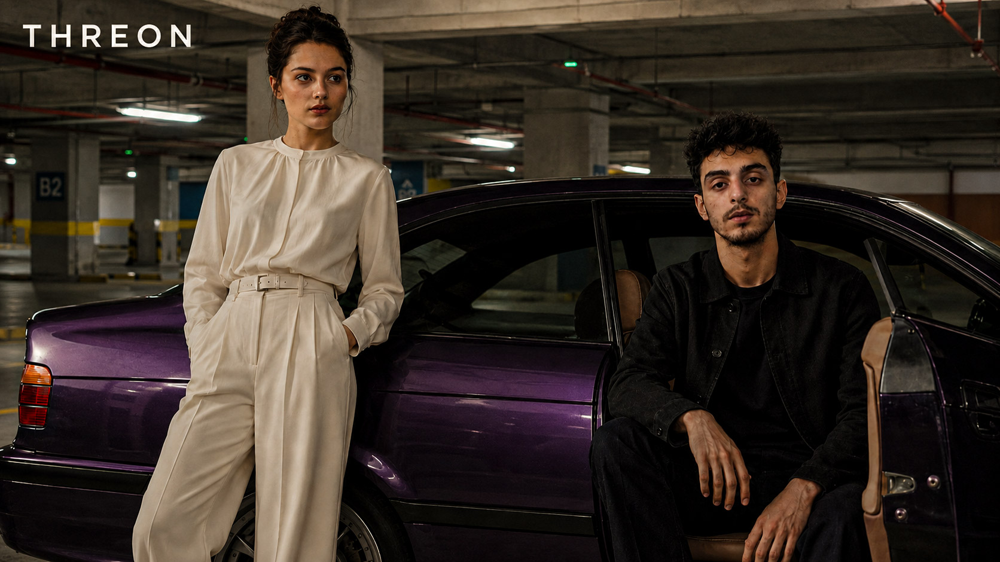

Antalya'da kuruldu · Birinci bölüm
Gündelik gardıroba premium şehir giyimi disiplini.
THREON; Antalya'da doğan, şehir hayatına uygun, tok kumaşlı, güçlü siluetli ve uzun süre giyilebilir parçalar üretmek için kurulan premium bir giyim markasıdır.

Kıyı şehrinin rahatlığı ile metropol gardırobunun net çizgisi aynı koleksiyon dilinde birleşir.
Sezonu kalabalıklaştırmak yerine, birbirini tamamlayan ana parçalarla kontrollü drop mantığı kurulur.
Fotoğrafta güçlü, elde tok, kullanımda rahat ve kombinlemesi kolay parçalar tasarlanır.
Manifesto
Az parça, güçlü duruş.
THREON koleksiyonları, tek sezonluk hızlı trendler yerine tekrar tekrar giyilecek kapsül parçalar üzerine kurulur. Bir ürünün değeri; kumaş hissi, kalıp dengesi, kombinlenebilirliği ve gün sonunda kullanıcıya verdiği özgüvenle ölçülür.
THREON imzası
Rahatlık lüksün karşıtı değil, temelidir.
Kıyı rahatlığı
Antalya'nın gündelik akışı markanın rahat kalıp ve nefes alan stil anlayışını besler.
Şehir netliği
Temiz renk paleti, güçlü omuz çizgisi ve sade formlar ürünü daha pahalı gösteren ana dildir.
Sezon kontrolü
Her kategori, kapsül gardıropta diğer parçalarla konuşacak şekilde seçilir.
Kalıp mimarisi
Oversize hacim, rahat hareket alanı ve temiz omuz çizgisi birlikte düşünülür.
Materyal hissi
Tok duran, fotoğrafta güçlü görünen ve günlük kullanımda formunu koruyan dokular seçilir.
Kapsül renkler
Siyah, kemik, gri, lacivert, haki ve kahve tonları marka gardırobunun temelini oluşturur.
Marka akışı
Bir THREON parçası nasıl doğar?
Sezonun renk, doku ve sokak silueti referansları belirlenir.
Ürünün günlük kullanımda nasıl duracağı test edilir.
Parça, diğer kategorilerle birlikte kombinlenebilir hale getirilir.
Ürün fotoğraf, açıklama, beden ve stok bilgileriyle mağazaya alınır.
THREON alışveriş
Kapsül gardırobunu kur.
Yeni gelenlerden başlayarak takım, üst giyim, alt giyim ve dış giyim parçalarını birlikte keşfet.